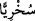
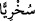

takdimi de buna delâlet eder. Çünkü bu takdim tahsîs içindir.
Hulâsa risâletten daha basit olan erzak taksimini bile biz yaptık. Bunun seçimini bile
onlara bırakmadık. Yoksa hepsi zâyi ve helâk olup giderlerdi. Hâl böyleyken din
konusuna ne demelidir. Rızık konusundan çok daha üstün ve önemli olan risâletin
seçimini nasıl onlara bırakırız ki.
“Birbirlerine iş gördürmeleri için” rızık konusunda ve diğer maîşet sebeplerinde
“kimini ötekine” hikmeti muktezâsınca ve yakınlık ya da uzaklık bakımından çok farklı
“derecelerle üstün kıldık.” Âyet-i kerimede geçen “__WORD__/sühriyyen” kelimesi burada
“iş gördürmek ve çalıştırmak” mânâsındadır. Yoksa kesinlikle “alay ve istihzâ”
anlamında değildir. Çünkü böyle bir şeyi hükme illet yapmak uygun düşmez. Meşhûr
rivâyete göre kurrâ buradaki “__WORD__/sühriyyen” kelimesindeki “sîn” harfinin ötre okunuşu
hakkında ittifak etmişlerdir. Ötre okunuş, “teshîr” yani hizmete âmâde ve mutî olmak
mânâsındadır. Alay ve istihzâ mânâsında olan ise “sihriyyen” şeklindeki esreli
okunuştur. Mânâ şöyledir: Bunları; kuvvetli, fakir, zengin, hizmet eden, hizmet olunan,
hükmeden, hükmolunan şeklinde ayırdık ki birbirlerini iş ve maslahatlarında istihdâm
edebilsinler. Zenginler mallarıyla fakir işçileri çalıştırsın da bu şekilde birbirlerinin
maîşetine sebep olabilsinler. Zengin malıyla, fakir iş gücüyle bu oluşumu sağlayabilsin.
Bu şekilde âlemin kıvâm ve nizâmı tamam olabilsin. Yoksa bu durum, zenginin tam ve
mükemmel, fakirin ise eksik olması anlamında değildir.
“Rabbinin rahmeti, onların biriktirdikleri şeyden daha hayırlıdır.” Nübüvvet ve
buna bağlı olan dünya ve âhiret mutluluğu, bu kâfirlerin toplamış oldukları fânî ve
bayağı dünya malından daha hayırlıdır. “Büyük adam”, onların toplamış oldukları basit
ve bayağı şeylerden değil, bu büyük rahmetten rızıklanandır. Oysa müşrikler, bu
büyüklüğün mal ve mevkide olduğunu zannetmektedirler.
Âyette şu husûsa işâret edilmektedir: Allah Teâlâ elbette bir ülkenin hiç de
önemsenmeyen fakirlerine/dervişlerine Kur’ân’ın hakîkat ve sırlarından o beldenin nice
âlim ve fazîlet ehli olanlarına vermediği feyiz ve güzellikleri verir. Zîrâ velâyet taksimi,
nübüvvet gibi Yüce Allah’ın kudret elindedir. Ders, eğitim, öğretim ve ilim tahsiliyle
elde edilemeyen nice feyizler vehbî olarak elde edilebilir. Yine mal sûretinde
ihtiyaçların karşılanması için insanların birbirlerine iş gördürmeleri söz konusu olduğu
gibi, aynı şekilde ilim ve velâyet sûretinde de nefis terbiyesi için insanların birbirlerine
iş gördürmeleri söz konusudur. İşte bu ilim, velâyet ve nübüvvetten her biri dünyadan
ve dünyada olan mal ve diğer rızıklardan daha hayırlıdır.
Bazıları şöyle demiştir: Maîşet çeşit çeşittir. İman, sıdk, irâde, ilim, hizmet, tevbe,
inâbe, muhabbet, şevk, aşk, mârifet, tevhîd, firâset, kerâmet, vârid, kanâat, tevekkül, rızâ
ve teslîmiyet. İşte dünyevî rızık ve mal sahipleri çeşit çeşit oldukları gibi bu
makamların sahipleri de çeşit çeşittir. Onlar mârifet makamında da farklıdırlar. Meselâ
bu makam sahiplerinden bazıları mârifet konusunda –asgarî müşterekleri olsa da- diğer
bazılarından daha üstündürler. Artık sen muhabbet ve benzeri makam sâhiplerini buna
kıyas edebilirsin. Bunlar Allah’a yönelenler içindir. Allah’a sırt çevirmiş olanlar için